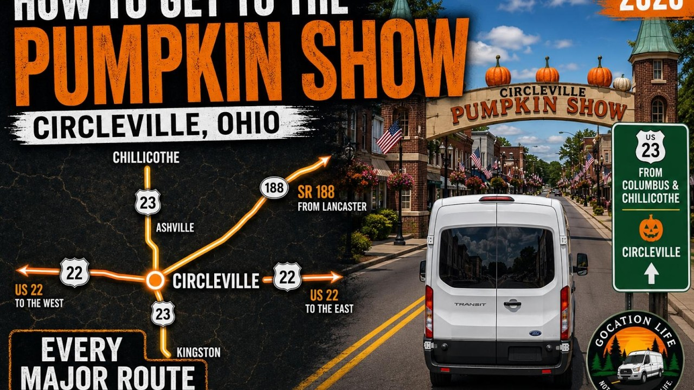

US 23
The video includes US 23 approaches from both the Columbus side and the Chillicothe/Portsmouth side.

Circleville Pumpkin Show series · Part 2
Circleville, Ohio · 2026 driving guide
Ride the major approaches into Circleville with Mike and Sherry before choosing your show-day plan.
▶ Watch the full 32:34 video on YouTube01 / ORIENT
This second Pumpkin Show video follows the major approaches into Circleville so visitors can recognize the roads and arrival areas before the crowds build.
The published video covers approaches from Columbus, Chillicothe, Lancaster, and eastern Ohio. It includes US 23, SR 188, US 22, Walnut Creek Pike, and the final approach toward downtown.
02 / WATCH
Compare the major approaches, see the roads before the show, and get a clearer picture of how Circleville connects from each direction.
03 / COMPARE
Use these as orientation points, then check current conditions before leaving.
The video includes US 23 approaches from both the Columbus side and the Chillicothe/Portsmouth side.
See the approach toward Circleville from the Lancaster and Lithopolis direction.
The guide includes the eastern approach as well as the west side for travelers coming from the Washington Court House and Williamsport direction.
Mike and Sherry also show the Walnut Creek Pike approach from the Groveport direction.
04 / PREVIOUS IN THE SERIES
Start with Mike and Sherry’s downtown perimeter, parade-route streets, main show streets, and pumpkin-donut finish.
Explore Part 1 and the visitor guide →05 / KEEP EXPLORING
Find calm drives, waterfalls, historic places, roadside stops, and event previews from Mike and Sherry.
Explore the Gocation Life travel hub →